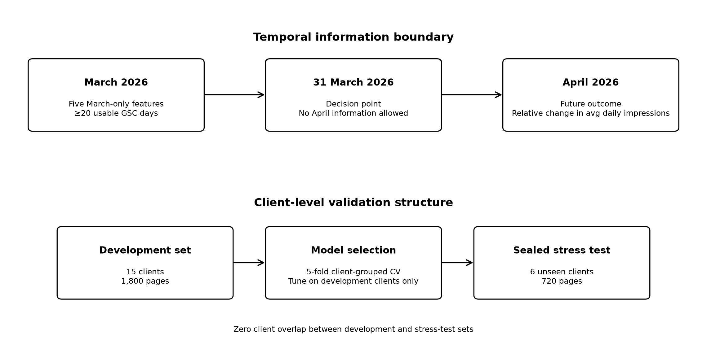
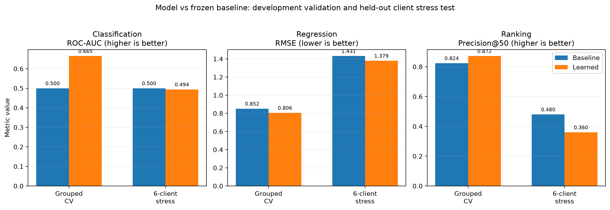
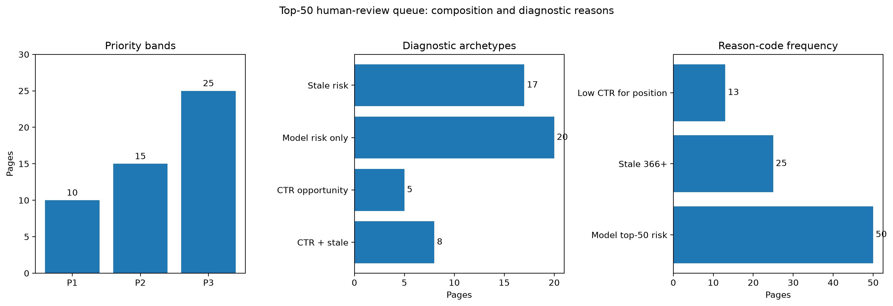

Abstract
This study investigates whether information available before a content-review decision can identify pages at risk of future search-performance decline and, more importantly, determine which pages should receive limited human attention first. From the pseudonymized FlyRank internship warehouse, a balanced proof-of-concept cohort of 2,520 pages across 21 clients was constructed through exposure-based stratification, while candidate predictors were grouped by behavioral role and reduced to five leakage-safe March 2026 features—aggregate_ctr, median_position, position_slope_per_day, position_iqr, and content_age_days—without using April outcomes for selection. Classification estimates whether future decline occurs, signed regression estimates the direction and magnitude of future impression change, and negative predicted change is converted to decline severity and combined with classification risk to rank a top-50 review queue; independent CTR and freshness diagnostics then attach transparent reason codes and rule-based action archetypes so a reviewer can understand why a page was surfaced. The pipeline showed useful signal during development validation that kept clients separated, but a six-client stress test exposed limited transfer: regression retained a modest improvement over its frozen baseline, while classification and the final ranking did not. The contribution is therefore a human-review decision-support framework—not an automated intervention system—that connects risk estimation, change estimation, prioritization and diagnostic guidance while requiring fresh client-level validation before broader operational use.
From prediction to an allocation decision
Large content inventories create an allocation problem before they create a modeling problem: a content or SEO team cannot inspect every page, so it needs a defensible way to decide what deserves attention first. A binary decline flag alone does not say how large the expected movement is, how pages should be ordered under limited review capacity, or why a surfaced page deserves investigation.
The project therefore decomposes the decision into a progression of standard tasks. Transparent grouping first structures the population and feature space; classification asks whether future decline occurs; signed regression estimates the size and direction of future change; and ranking combines decline risk with decline severity to allocate a fixed top-50 review budget.
The ranked output is then made interpretable through independently audited CTR-relative-to-position and freshness signals. These signals become reason codes and rule-based diagnostic archetypes that tell a reviewer where to investigate first, while stopping short of claiming that an edit will cause recovery.
A transparent rule baseline is retained throughout. The learned system is only useful where it improves the decision under an honest validation design, so negative results are preserved rather than hidden.
Decision-time data, balanced before modeling
The analysis uses the pseudonymized FlyRank internship warehouse release flyrank_pseudonymized_warehouse_release_v20260703. The documented release contains 78,835,655 rows in the daily content-performance fact table; that number describes warehouse scale, not the number of rows used to train the final models.
The final POC uses 2,520 content pages from 21 pseudonymized clients. Pages are balanced across Low, Medium and High March exposure tiers—840 pages in each tier—to prevent large clients or highly visible pages from dominating the proof of concept. The balanced sample is therefore not a natural estimate of FlyRank-wide prevalence.
Feature window: 1–31 March 2026. Decision cutoff: 31 March 2026. Outcome window: 1–30 April 2026. Pages require at least 20 usable GSC days in each month to support an evaluable future outcome.
The broader observability audit found 106,546 March feature-eligible pages across 37 clients; 95,633 had sufficient April observations, retaining 89.76% of March-eligible pages for outcome evaluation.
A justified progression toward the final ranking decision
Five pre-decision features
| Feature | Role |
|---|---|
aggregate_ctr | March click efficiency |
median_position | Typical March search position |
position_slope_per_day | Direction of March position movement |
position_iqr | March position variability |
content_age_days | Content age at the decision cutoff |
Candidate variables are grouped into behavioral families before reduction. Unsafe fields and obvious duplicates are removed first; the final five are chosen for decision-time availability, coverage, interpretability and non-redundant behavioral meaning. April outcomes are not used to select them.
Three predictive components
Classification: future_decline = future_impression_change < 0, answering “will the page decline?”
Regression: future_impression_change = (April avg impressions/day − March avg impressions/day) / March avg impressions/day, answering “how much and in which direction will performance move?”
Ranking: negative regression predictions are converted into non-negative decline severity and combined with classification risk:
ranking_score = p_decline^γ × (1 + λ × normalized_predicted_decline_severity), with grouped-development tuning selecting γ = 2 and λ = 1.
Baselines and validation
The frozen baselines are a training-prior classifier, a training-mean regressor, and a transparent ranking rule based on low CTR relative to position plus a staleness boost. All comparisons use the same outcome definitions and evaluation populations.
The outer split is grouped by client with GroupShuffleSplit(test_size=0.25, random_state=42): 1,800 pages from 15 clients for development and 720 pages from 6 unseen clients for the sealed stress test, with zero client overlap. Model selection uses five-fold client-grouped cross-validation on the development clients only.

Leakage control
All five active features pass availability, target-derivation, future-overlap, decision-derivation and identifier checks. A deliberate target-derived leakage experiment raised grouped-CV classification ROC-AUC from 0.665 to 1.000, demonstrating how future information can make weak analysis look artificially perfect; the illegal field is excluded.
Development signal did not transfer consistently to unseen clients
Results are reported in two layers because development validation and unseen-client transfer answer different questions.
Client-separated development validation
| Task | Metric | Frozen baseline | Learned | Direction |
|---|---|---|---|---|
| Classification | ROC-AUC ↑ | 0.500 | 0.665 | Improved |
| Regression | RMSE ↓ | 0.852 | 0.806 | Improved |
| Ranking | Precision@50 ↑ | 0.824 | 0.872 | Improved |
Six-client sealed stress test
| Task | Metric | Frozen baseline | Learned | Interpretation |
|---|---|---|---|---|
| Classification | ROC-AUC ↑ | 0.500 | 0.494 | Did not beat baseline |
| Regression | RMSE ↓ | 1.431 | 1.379 | Modest improvement |
| Ranking | Precision@50 ↑ | 0.480 | 0.360 | Underperformed baseline |

The learned stress-test top 50 contained 18 true future declines and 32 false picks. The finding is therefore validation-sensitive: the pipeline contains useful structure, but the primary ranked-review product did not generalize reliably to the six held-out clients.
Why client separation matters
A validation audit compared naive random-page CV with client-grouped CV on the same 1,800 development pages. Random-page validation reused all 15 clients across train and validation folds and produced classification ROC-AUC 0.725 and ranking Precision@50 0.948; client-grouped validation reduced client overlap to zero and produced 0.665 and 0.872 respectively. The more optimistic random-page results illustrate the risk of learning client-specific structure that does not transfer.
What this evidence can—and cannot—support
The project uses grouping in four transparent ways—exposure strata, feature families, client validation groups and rule-based diagnostic archetypes. These are not learned unsupervised clusters, so the paper makes no claim about cluster discovery or cluster quality.
Turn the score into a review starting point—not an automatic edit
The final research artifact is a top-50 human-review queue. It is divided into 10 P1, 15 P2 and 25 P3 pages and uses transparent reason codes to explain why a reviewer should look.
| Diagnostic archetype | Pages | Suggested review starting point |
|---|---|---|
| CTR_AND_STALE | 8 | Review CTR context and content freshness together |
| CTR_OPPORTUNITY | 5 | Review search snippet, SERP context and intent |
| STALE_RISK | 17 | Review freshness and whether the content remains current |
| MODEL_RISK_ONLY | 20 | Diagnose before editing; model risk alone is not an action |
CTR relative to position is a confirmed diagnostic cue in this sample: observed decline rate is 74.66% in the bottom quartile versus 52.33% in the top quartile. Content age is a mixed freshness cue: the youngest bucket has 55.72% observed decline versus 84.96% in the oldest, but the middle buckets are not monotonic. Neither signal is evidence that a specific edit will cause recovery.

Human-review rule
For every row, check data sanity, search context, content context, business value/cost and action fit before choosing APPROVE_REVIEW_ACTION, DEFER_FOR_MORE_CONTEXT, NO_CHANGE or ESCALATE.
No-go rules
Do not automatically rewrite, publish, delete, redirect, unpublish or change metadata from the queue; do not treat the score as a calibrated probability; do not treat age or low CTR as proof that an edit will help; do not hide unfavorable validation; and do not deploy the learned ranking to materially new clients without fresh validation.
Trace every claim back to a committed artifact
The notebook and machine-readable receipts in the public repository are the analytical source of truth. The static page is only the communication layer.
- Data contract and five-feature reduction
- Frozen classification, regression and ranking baselines
- Model selection, grouped CV and ranking blend
- Validation, leakage and error audit
- Human-review action playbook
- Executed capstone notebook
- Cross-assignment methodology consistency gate
Frozen design: March 2026 predictors, 31 March decision point, April 2026 outcome; five active features; client-grouped outer split with random state 42; five-fold client-grouped development CV; K=50 for the primary ranking metric.
Assignments that rebuild directly from the gated warehouse require approved access to FlyRank/internship-warehouse and an HF_TOKEN. The capstone reruns from committed public-safe receipts and figures, allowing the paper evidence to be inspected without exposing private client-level data.
Data credit
Built on the FlyRank ML Internship dataset.
The analysis uses the pseudonymized FlyRank internship warehouse release documented in the repository. Public outputs are aggregate and do not expose client names, domains, URLs, page titles, raw search queries, credentials or other private identifiers.
This is an educational/research proof of concept for human decision support. It does not claim access to Google's ranking algorithm and does not estimate causal effects of content interventions.